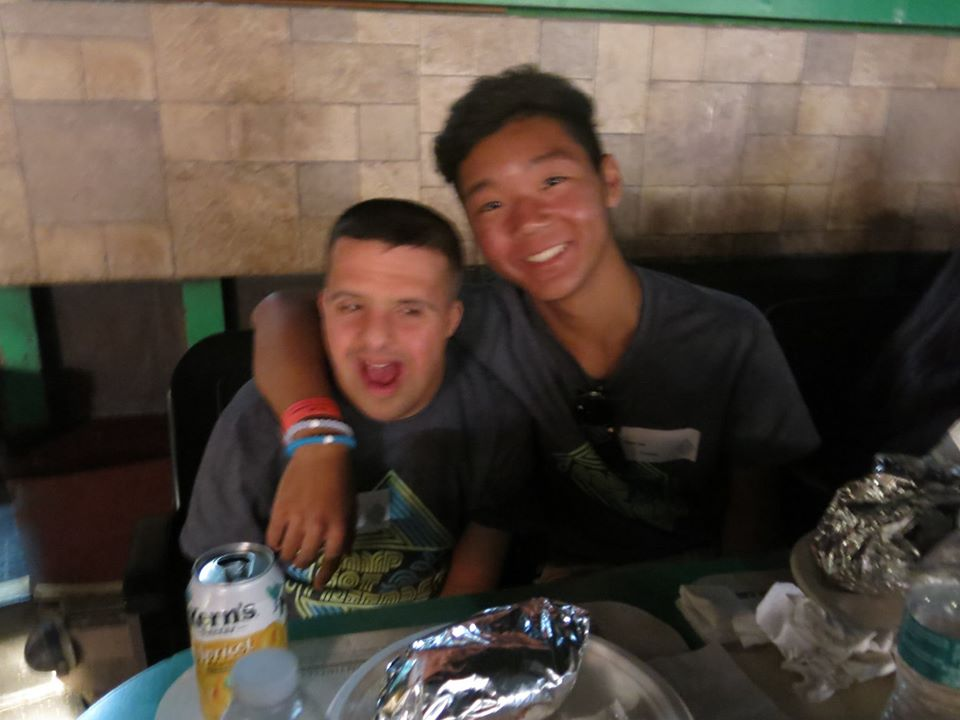
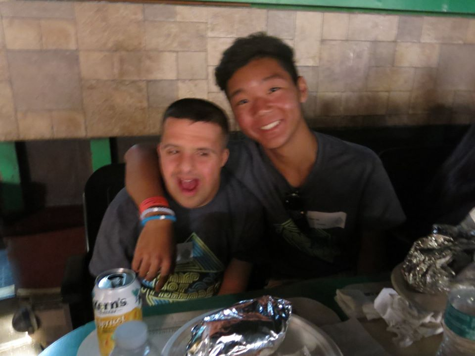
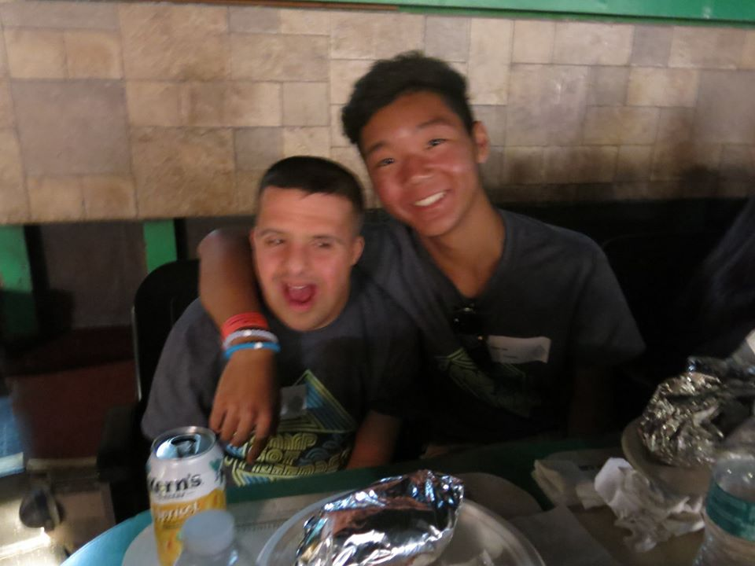

Sean Lee
My name is Sean Lee and I am a graduate from the University of California, Riverside. I majored in Business Administration with a concentration in finance. Academically, I maintained a 3.5 cumulative GPA while making the Dean’s list in my fourth year. Some important qualities I possess are that I am careful with detail, a diligent worker, and clever when it comes to working and problem solving. I am a very social person who thrives with groups of people both large and small. I am an alumni of the Sigma Alpha Epsilon fraternity and have learned the importance of good conduct and etiquette from the connections I have made there. I am proficient in Office 365 and Adobe Creative Cloud along with being bilingual in both English and Korean. I bring reliability, honesty, and compassion to the workplace and I work well with my peers.
During high school, I worked at Trader Joe’s as a cashier and occasionally restocked inventory for two years until I graduated. Through my time at university, I have held internship positions at media firms and talent agencies, as well as leadership positions in my fraternity at UC Riverside. About my internship experiences, I have taken a position at CAA talent agency where I got to learn the most of my experience behind a desk which helped me attain my second internship at Wilshire Financial in Santa Monica, California. During these opportunities, I learned how important it is to bring something to the table and possess technological skills. I also have volunteer experience with The Friendship Foundation(a non-profit organization that helps and assist kids with special disabilities), The Boys and Girls Club at the Port of Los Angeles, and the Palos Verdes Basketball Association(a local non-profit organization that provides recreational organized basketball for kids ages eight through fourteen).
Some things I enjoy in my free time are working out, making films, learning about technology, and spending time with my family. In my personal life, I try to ease myself whenever I can to prepare for extreme pressure or time constraints in the workplace. I sleep 8 hours a night to avoid burning out during the day, and I maintain a healthy diet and lifestyle. Something I consider important to me or essential in my life is my cell phone because it is a hub for almost everything I need to do from communicating with other people to accessing documents or information. I am punctual with important deadlines and try effortlessly to put my best work forward in everything I do. I come from a small town called Rancho Palos Verdes, located on the Southern California Peninsula west of Long Beach. I find interest in watching sports such as basketball, football, soccer, and baseball. As much as I enjoy playing these sports, I find more interest in the professional aspect of sports and all of the metrics used to focus on different outlooks of a sport that a normal viewer would not take into account.
Experience
Intern
• Developed word documents, powerpoints, and spreadsheets for reference
• Ran copies, faxes and scans for documents
• Set up and cleaned up after meetings and presentations.
Cashier/Inventory
• Responsible for scanning and bagging groceries
• Restocked shelves and collected shopping carts in parking lot
Intern
• Spoke with clients about their finances
• Reviewed cleintele and cashflow
• Contributed to a cloud server to facilitate remote working and workspace sharing.
Education
University of Southern California
University of California, Riverside
Portfolio
 

